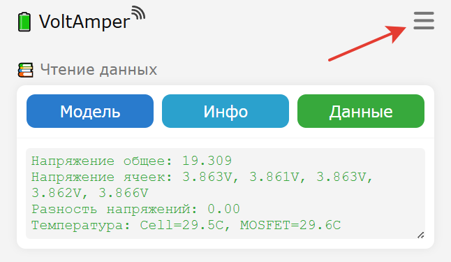
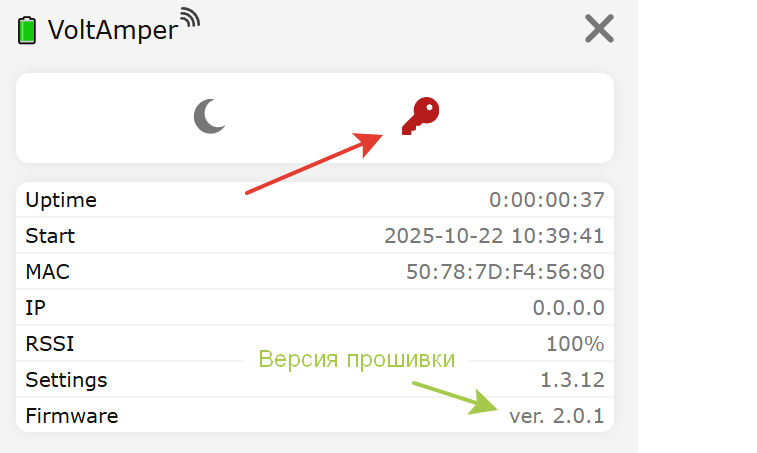
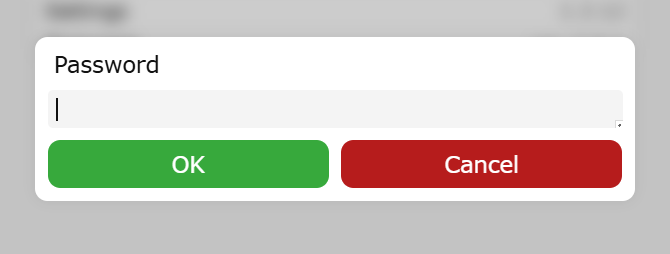
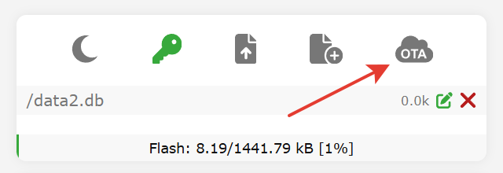
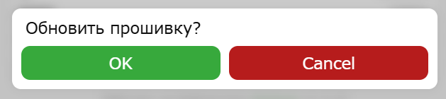
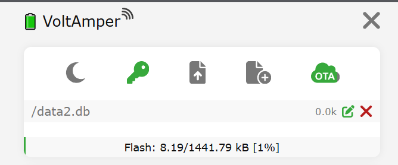
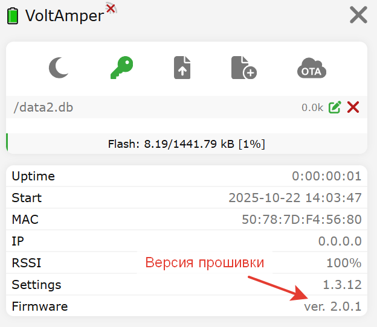

Подключитесь к Wi-Fi сети устройства с любого устройства (компьютера, телефона или планшета)
ВАЖНО: Перед началом обновления
Обязательно сохраните лицензионный ключ и номер прибора! При случайном удалении файла с базой данных (который доступен в режиме администратора) потребуется повторная активация.
Рекомендуется:
- Сделать скриншот раздела с лицензионной информацией
- Записать номер прибора и лицензионный ключ на бумаге
- Сохранить эти данные в надежном месте
Шаг 1: Подключение к устройству
Убедитесь, что устройство включено и подключено к Wi-Fi сети. В коде указано, что устройство создает точку доступа с именем "Makita" и паролем "12345678".
Примечание: В коде устройства заданы следующие настройки:
- SSID:
Makita - Пароль:
12345678 - Режим: Точка доступа (AP)
Подключитесь к Wi-Fi сети устройства с любого устройства (компьютера, телефона или планшета)
Откройте WEB браузер и перейдите по адресу 192.168.4.1 (предварительно отключите сеть "Мобильные данные")
Шаг 2: Открытие меню
Откройте меню нажав на иконку указанную на рисунке ниже.

Шаг 3: Ввод пароля администратора.
После открытия меню нажмите иконку ключ указанную на рисунке.

И введите в поле, открывшегося окна Password, пароль LXTFIX

Шаг 4: Выбор прошивки
После ввода правильного пароля иконка ключа станет зеленым и появится иконка ОТА (облако)".
Нажав на иконку OTA откроется проводник файлов вашего устройства. Найдите и выберите заранее скачанную прошивку.

Примечание: Убедитесь, что файл прошивки имеет правильный формат (обычно .bin) и совместим с вашим устройством.
Шаг 5: Загрузка новой прошивки
После выбора файла прошивки нажмите кнопку ОК для начала загрузки.

Шаг 6: Процесс обновления
При обновлении прошивки иконка облако станет зеленым. Не прерывайте процесс обновления и не отключайте питание устройства до появления сообщения "OTA завершено" в нижней части экрана.

Внимание: Прерывание процесса обновления может привести к повреждению прошивки и необходимости физического перепрограммирования устройства!
Шаг 7: Завершение обновления
После успешной загрузки прошивки устройство обычно перезагружается автоматически. Если этого не произошло, вы можете перезагрузить устройство вручную с помощью кнопки "Перезагрузить" в веб-интерфейсе или выключив и включив питание.
Шаг 8: Проверка новой версии
После перезагрузки снова откройте меню и проверьте, что версия прошивки изменилась на новую.

Дополнительная информация
В коде устройства реализована система лицензирования через серийный номер. Если после обновления возникают проблемы с лицензией, обратитесь в техподдержку.
Важные предупреждения
- Под паролем администратора не совершайте иных действий кроме указанных в данной инструкции.
- Убедитесь, что источник прошивки надежный и файл не поврежден
- Не прерывайте процесс обновления
- Убедитесь, что устройство имеет стабильное питание во время обновления
- После прошивки выйдите из режима администратора введя неверный пароль.